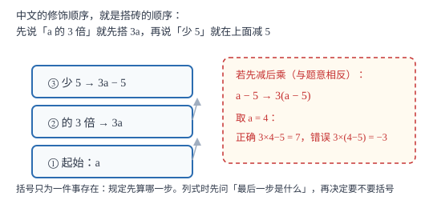

列代数式表示数量关系
列式不是把中文逐字翻成符号，而是先认出「谁在变、谁不变、谁由谁算出来」，再按中文的修饰顺序一层层搭上去。
| 所属主题 | 代数式 |
|---|---|
| 所属模块 | 代数 |
| 课标学段 | 第四学段（7~9 年级） |
| 前置知识 | 代数式与字母表示数 |
| 核心素养 | 模型观念应用意识 |
教材定位
人民教育出版社《人教版（2024版）义务教育教科书·数学》
七年级上册第3章 代数式3.1 列代数式表示数量关系
对应七上 3.1 第 2 课时「列代数式」。教材按「文字叙述—实际情境—几何情境」三类铺开；本篇把「修饰顺序即运算顺序」提炼成主判据，并补上特殊值回读只能否证不能证伪这层方法论。
说明
列代数式的核心动作是「翻译」，但不是逐字翻译。题目说「比 a 的 3 倍多 5 的数」，写成 3a+5；说「a 与 5 的和的 3 倍」，写成 3(a+5)。两句中文只差语序，式子完全不同——所以列式第一步永远是看清「最后一步运算是什么」。
一套通用步骤：① 读题，圈出关键字（和、差、倍、分、多、少、增加到、增加了、平方、立方、倒数）；② 设字母，明确它代表哪个量、单位是什么；③ 顺着「谁由谁算出来」搭式子，从最靠近字母的那个量开始，一层层往外写；④ 用一个小数值代进去回读，看是否与题意相符。
四类常考模型。行程：s=vt，顺水速度 = 静水速度 + 水流速度，逆水速度 = 静水速度 − 水流速度。几何：长方形面积 ab、圆面积 π r^2、三角形面积 1/2ah。经济：总价 = 单价 × 数量，折后价 = 标价 × 折扣率。数字表示：两位数 = 10a+b，三位数 = 100a+10b+c。
使用场景
行程与工程题里，「顺水」「逆水」「合作完成」是高频词，每个词背后是一个加减关系。几何题里，阴影面积常用「大减小」或「整体减空白」。经济题里，打折、满减、分段计费最容易把「乘」和「减」的顺序搞反。
规律探究题也靠列式：给出前几个图形的小棒数 4、7、10、13，要求写第 n 个图形的式子。做法是看每次增加几（这里每次加 3），先写 3n，再补一个修正项（3n+1），最后代 n=1 验证是否等于 4。
注意点
「增加到」与「增加了」不同：增加到 a 的 3 倍是 3a，增加了 a 的 3 倍是 a+3a=4a。
「多」与「少」要看清主语：甲比乙多 5 是「乙 + 5」，乙比甲少 5 是「甲 − 5」，同一个 5，方向相反。
字母表示两位数时，ab 是 a 乘 b，不是「十位是 a、个位是 b」的那个两位数；后者必须写成 10a+b。
证明

图 1：中文的修饰顺序就是搭砖的顺序——先说「a 的 3 倍」就先搭 3a，再说「少 5」就在上面减 5
证明
结论 1「a 与 b 的和的平方」与「a 的平方与 b 的平方的和」是两个不同的式子：(a+b)^2 与 a^2+b^2。
取 a=1、b=2。(a+b)^2=(1+2)^2=9；a^2+b^2=1^2+2^2=5。同一组数代入得到不同结果，说明两个式子不相等，不能互相替换。原因是运算顺序不同：前者先加后平方，后者先平方后加；括号的作用正是规定「先算哪一步」。
关键一步依据是：括号改变运算顺序，运算顺序改变结果；一组反例即可证明两式不同。
结论 2「a 的 3 倍少 5」是 3a-5，不是 3(a-5)。
「a 的 3 倍」就是把 a 连加三次，等于 3× a；在此基础上「少 5」，是在这个乘积上减 5，得 3a-5。若写成 3(a-5)，表示的是「a 与 5 的差的 3 倍」，中文应是「a 比 5 多的那部分的 3 倍」，与题意不符。取 a=4：3a-5=7，3(a-5)=-3，相差 10。
关键一步依据是：中文的修饰顺序决定运算先后——「的 3 倍」先作用于 a，「少 5」后作用于整个乘积。
结论 3列完式子可以用特殊值回读，但特殊值只能否定、不能肯定。
若两式在某组特殊值下不相等，则两式必不相等，否定有效。但若在某组值下恰好相等，不能断定两式相等——取 a=0，a^2 与 a 都得 0，而 a=2 时分别得 4 与 2。所以回读的作用是「抓错」，不是「验对」；真要确认恒等，需要化简或推理。
关键一步依据是：一个例子足以推翻「对一切取值都成立」的说法，但一个例子证明不了这种说法。
动手实验
取一根 20 厘米长的铁丝围长方形：长记作 a 厘米，宽就是 (10-a) 厘米，面积是 a(10-a) 平方厘米。分别取 a=1,3,5,7,9 算面积，把结果记在表里，观察面积先变大后变小、在 a=5 时最大（25 平方厘米）。这一步既练了列式，也提前看到了「式子的值随字母变化」这件事。
解题思路
列式四步，一步不能省。第一步圈词：把「和、差、倍、分、多、少、增加到、平方、倒数」圈出来，它们是运算的信号。第二步定位：找出题目里最基础的那个量，把它设成字母，其余量都用它表示——设错基础量，式子会越写越乱。第三步倒推：从问题问的那个量出发，问「它等于什么」，一层层往下拆，直到拆到字母为止。第四步回读：给字母取一个简单的数，代进式子算一遍，看是否符合题意。
遇到复杂的多步描述，先写半符号的中间式。例如「甲数是 x，乙数比甲数的 2 倍少 3」，先写「乙 = 2 × 甲 − 3」，再把「甲」替换成 x，得 2x-3。这样写虽然啰嗦，但不会漏掉某一层；熟练后再一步到位。
按场景的例题
例 1（场景：行程与速度） 船在流水中往返
一艘船在静水中的速度是每小时 v 千米，水流速度是每小时 c 千米（v>c）。船顺水航行 t 小时，航程是多少？返回原地需要多少小时？
解：顺水速度 = v+c，航程 = (v+c)t 千米。返回时逆水，速度为 v-c，路程相同，时间 = (v+c)t/v-c 小时。检查：取 v=15、c=3、t=2，顺水航程 (15+3)× 2=36 千米，返回需 36÷ 12=3 小时，比去时慢，符合直觉。
答：顺水航程 (v+c)t 千米；返回需 (v+c)t/v-c 小时。
例 2（场景：销售与利润） 打折后再满减
某商品标价 m 元，先打八折，再参加「满 100 减 20」活动。实际付款多少元？
解：先打八折得 0.8m；再减 20 得 0.8m-20。注意满减只在 0.8m≥ 100 时才成立，所以这个式子带有条件 m≥ 125。检查 m=200：0.8× 200=160，再减 20 得 140 元。
答：(0.8m-20) 元（当 m≥ 125 时）。
例 3（场景：图形设计） 正方形四角剪去小正方形
在边长 a 的正方形四角各剪去一个边长 b 的小正方形（b<a/2），剩下部分的面积是多少？
解：正方形面积 a^2，四个小正方形总面积 4b^2，剩下 a^2-4b^2。检查 a=6、b=1：36-4=32，与直接数格子得到的结果一致。
答：(a^2-4b^2) 平方单位。
例 4（场景：方案选择） 健身房两种收费
某健身房两种收费：A 方案年卡 1200 元不限次数；B 方案不收年费，每次 30 元。一年去 n 次，两种方案各需多少元？
解：A 方案与次数无关，恒为 1200 元；B 方案为 30n 元。两者都是代数式，其中 A 方案是单独一个数，也属于代数式。当 30n<1200 即 n<40 时 B 更省。
答：A：1200 元；B：30n 元；一年去不到 40 次时 B 更省。
例 5（场景：竞技与游戏） 火柴棒摆正方形
用火柴棒按规律摆正方形：第 1 个用 4 根，之后每多摆一个正方形多 3 根。写第 n 个图形用多少根；第 20 个呢？
解：第 1 个 4 根；从第 1 个到第 n 个共增加 (n-1) 次，故为 4+3(n-1)=3n+1 根。验证 n=2 时得 7，与题给一致；n=20 时得 3× 20+1=61 根。
答：(3n+1) 根；第 20 个用 61 根。
常用推论
两位数是 10a+b，三位数是 100a+10b+c。字母表示数字时必须乘上数位权，否则 ab 只是乘积，不是两位数。
「增加了 p%」写 a(1+p%)，「降低到原来的 q」写 aq。百分比问题的关键，是分清「变成多少」与「变化了多少」。
同一个代数式可以对应多个情境：2(a+b) 既是长方形周长，也可以是「两人各走 a 米与 b 米，各走两趟的总路程」。列式题与说意义题是同一件事的两个方向。
易错点
错「a 的 3 倍与 b 的和」写成 3(a+b)。
为什么错把「的 3 倍」的作用范围扩大了。「a 的 3 倍」只作用于 a，b 是另外加上去的。
正确3a+b。若题目说「a 与 b 的和的 3 倍」，才是 3(a+b)。
错「一个两位数，十位是 a，个位是 b」写成 ab。
为什么错把数位关系当成了乘法。十位上的 a 表示 a 个十，即 10a，不是 a。
正确两位数写作 10a+b。取 a=3、b=5 检验：10× 3+5=35，正确。
错「比 a 的一半多 2」写成 a+2/2。
为什么错把「多 2」放进了分子，等于先加后除，与「先取一半再加」的顺序正好相反。
正确a/2+2。取 a=10：正确结果是 7，错误写法得 6。
直观理解
列式像搭积木：字母是最底下那块砖，题目里的每一句话都是压在上面的一层。「a 的 3 倍少 5」是先搭「a 乘 3」，再在上面减 5；如果先把 a 减 5 再乘 3，搭起来的就是另一座塔。中文的修饰顺序，就是搭积木的顺序。